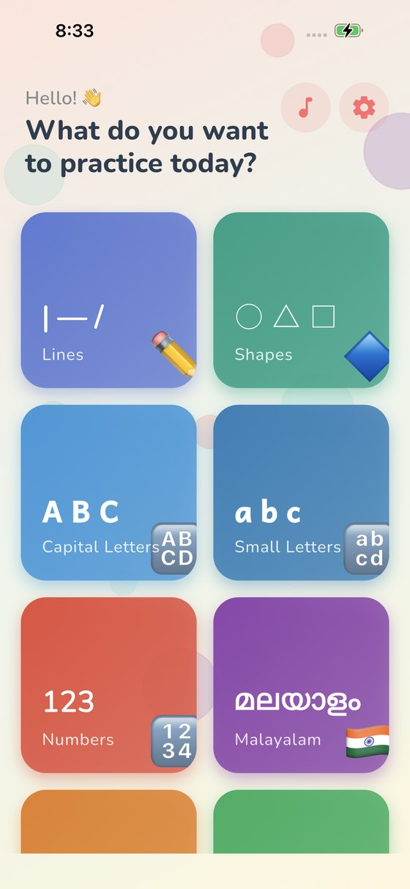
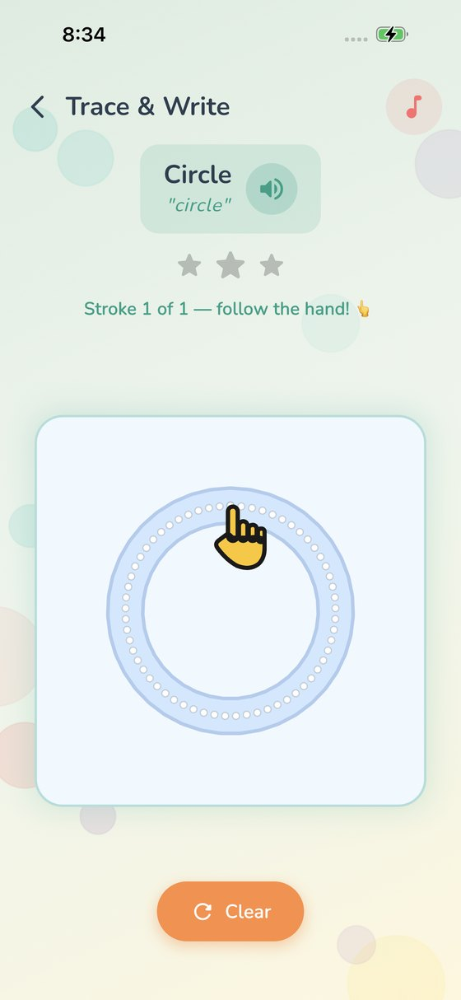
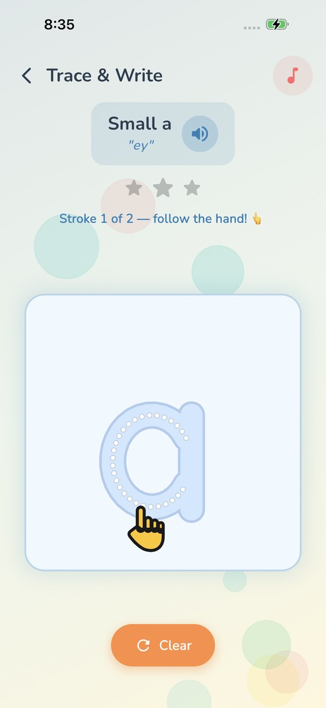
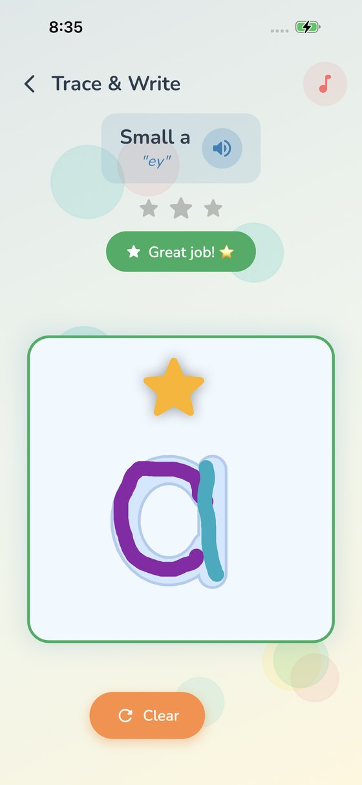
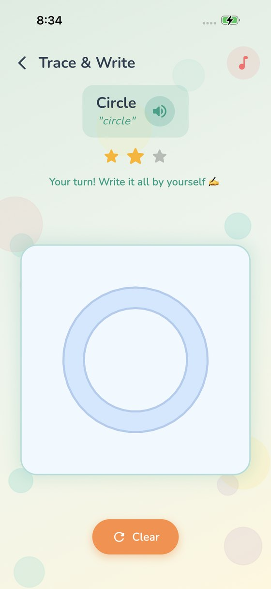
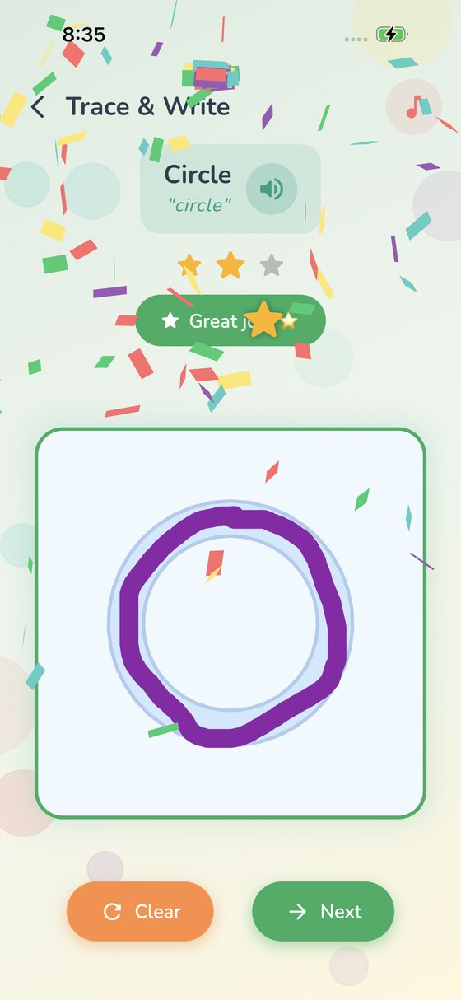
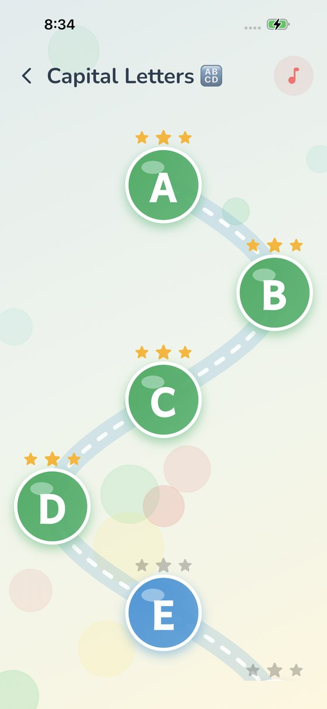
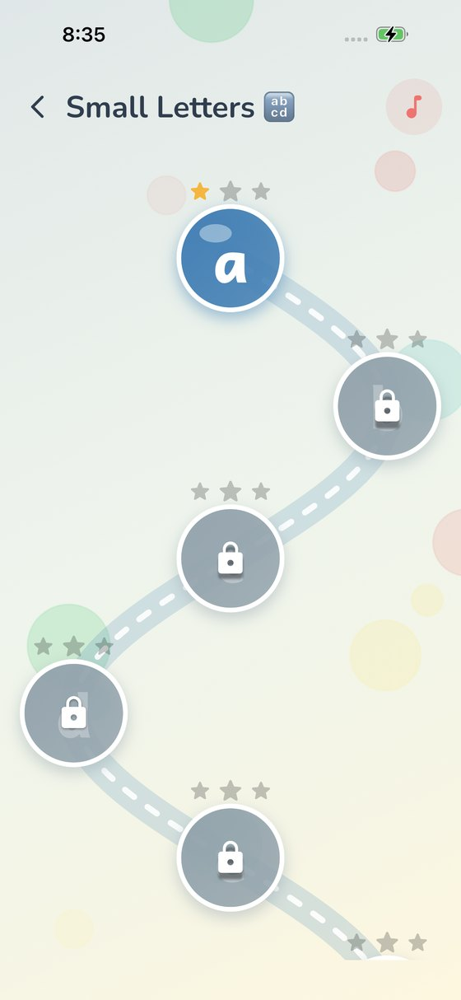
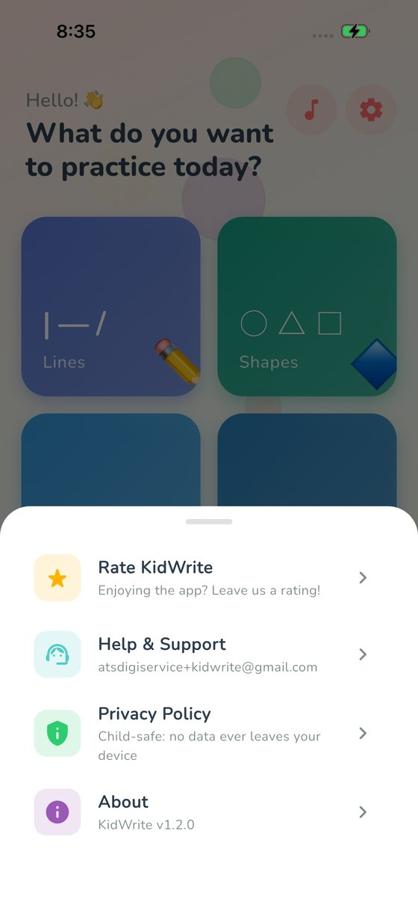

A free, offline handwriting app for children under 6. It covers the full pre-writing path a teacher actually follows — lines, then shapes, then numbers and letters — across English, Malayalam, Hindi and Tamil. No ads, no in-app purchases, no accounts, and no data collection of any kind.
Hundreds of millions of children learn to write Malayalam, Hindi and Tamil — and almost nothing on the App Store helps them do it. KidWrite treats those scripts as first-class, each with its own bundled typeface and spoken pronunciation, rather than bolting them onto an English app.
Built by one developer in Kerala, for families whose children learn a script the App Store has largely ignored.
A cartoon hand demonstrates every stroke the way it is taught in school. A font records where the ink sits, never the order a hand laid it down — so every path was authored by hand, letter by letter.
After two guided attempts the hand and dotted path disappear. The child writes from memory, and the app recognises the finished letter.
No setup, no account, nothing to buy, nothing collected. Hand a 4-year-old the device and walk away.
Most tracing apps never let go of the child's hand. KidWrite does — deliberately, and on the third attempt.
Stroke by stroke, in school order. Ink only registers inside the letter, so scribbling never counts as success.
The second star is earned the same way, reinforcing the sequence until the shape feels familiar.
No hand, no dots. Any stroke order is accepted — the app checks the finished letter. Three stars unlock the next one.
Captured on iPhone, KidWrite 1.4.0.









Every letter in all four is guided — 131 characters, each with its stroke order authored by hand. Each language ships with its own bundled typeface and spoken pronunciation, so nothing depends on the device having the right font or voice installed.
KidWrite was built so that a parent never has to think about what it is doing in the background — because it isn't doing anything.
Every letter in every script is now guided.
Thirteen vowels and all thirty-three consonants, each with the hand showing the real stroke order — and the shirorekha drawn last, the way Devanagari is taught.
Twelve vowels and twenty-two consonants. Tamil was the last script still traced over the font; now the hand shows the order for every letter the app teaches.
Finish a letter and it becomes something: अ अनार, ह हाथी, അ അമ്മ — spoken aloud, with a picture to match.
Every letter and reward word now plays a recorded clip, so nothing depends on the device having the right voice installed.
The release that completes the learning path.
Eleven patterns — standing, sleeping and slanting lines, rainbow and smile curves, zig-zags, waves and spirals.
Circle, square, triangle, rectangle, diamond, oval, star, heart and cross.
The third star removes the guide entirely and accepts any stroke order.
Letters sit along a winding path, with stars and locks replacing the old grid.
Two sections instead of one, so a child can start wherever they are ready.
A short first-run guide for parents, and proper landscape support on iPad.